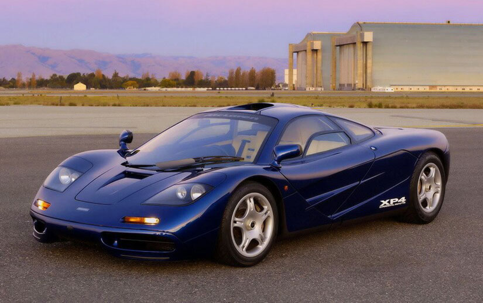
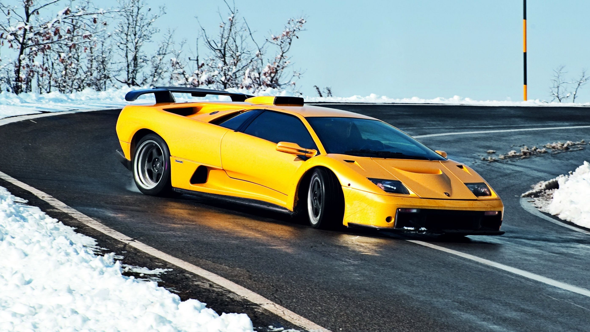

Classic Cars 1990s
Inicio
Coches
60s
70s
80s
90s
McLaren F1
Valorado en 20.100.000€

Lamborghini Diablo GT
Valorado en 4.500.000€

Honda NSX
Valorado en 20.000€
Ford Escort RS Cosworth
Valorado en 61.000€